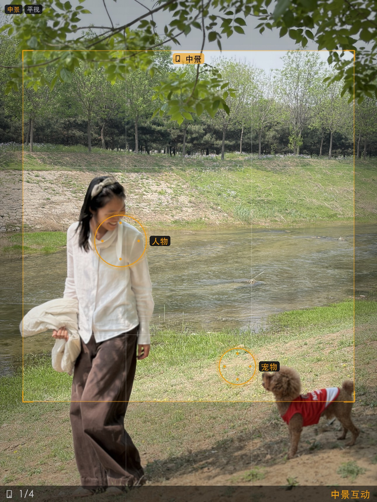
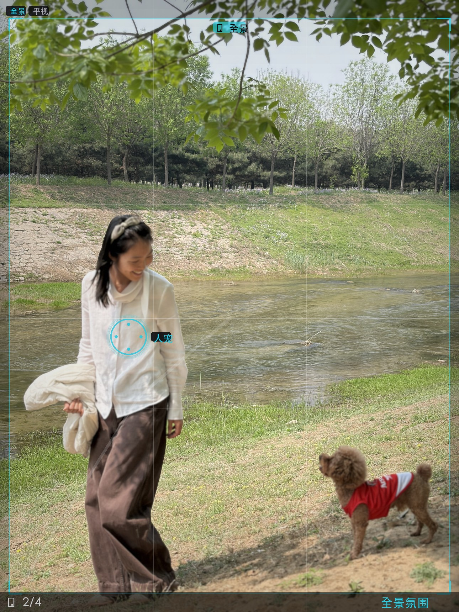

📷 新版方案卡片测试
统一 tag+text 结构 · 全部左顶满
方案 1：中景互动（方向：现在就拍）

✨ 效果预期
柔和侧光打亮人物侧脸和发丝，金棕色暖调。人物和狗安静待在画面里，像一张有温度的日常胶片。
📍 你怎么拍
📷 向前靠近一步，蹲下至胸口高度，与人物保持平视——让观众感觉就站在她面前，不是远远地拍
⚙️ iPhone 17 Pro 主摄（24mm等效）· 轻点人脸锁定对焦
🧍 被摄者动作
🧍 站姿
👀 眼神望远处
😊 自然表情
✋ 手自然垂放
侧身 45° 站立，手自然垂放，眼神看向远处——不是摆拍，是"刚好被拍到"的自然感。
📐 构图详解
▼
① 机位
人物放在画面左 1/3 竖线上，身体占画面中下约 40%
② 构图
穿红衣的泰迪放在右下方交叉点，与人物形成对角线平衡
③ 光线
光线从左上树叶缝隙射入，照亮人物侧脸和狗的红衣
④ 操作
轻点人脸锁定对焦，连拍 3 张选眼神最好的
🎨 后期
▼
调色
暖调提亮 + 暗角，模拟柯达 Portra 400 胶片色，阴影偏暖棕
特效
左上角添加柔光光斑，模拟树叶漏光效果；发丝高光强化
AI处理
背景增强虚化至 f/2.0 等效，分离人物与背景层次
🖼️ AI 生图提示词
（豆包 · 图生图模式）
参考上传的照片，保持人物的面部特征、发型、服装不变，保持春日河边坡地、绿叶柳枝的场景环境不变。 做以下调整： - 人物：侧身45°站立，手自然垂放，眼神看向远处 - 机位：向前靠近一步，蹲下至胸口高度 - 光线：午后阳光从左上树叶缝隙射入，在发丝形成金色轮廓光 画面风格：温暖日常——暖调低对比，阴影偏棕，高光过渡自然，轻微胶片颗粒，左上角柔光光斑溢出 无文字、无水印、无签名、自然肤质、真实摄影感
📋 复制提示词
🖼️ 生图
方案 2：全景氛围（方向：最出片）

✨ 效果预期
郊野河畔的松弛感——小人影在开阔景中，柳枝做天然前景画框。像一张电影剧照，不是游客照。
📍 你怎么拍
📷 退后几步拉开距离，站立拍摄，利用垂下的柳枝靠近镜头作为虚化前景
⚙️ iPhone 17 Pro 主摄 · 打开网格保持水平
🧍 被摄者动作
🧍 自然站立
🐕 牵狗绳
🌿 面朝河对岸
人宠保持自然站姿，面朝河对岸或低头互动。不需要刻意摆拍——松弛感来自真实状态。
📐 构图详解
▼
① 布局
人物+宠物组合放在左下区域，留出大面积天空和河水
② 前景
柳枝做前景虚化画框——手机贴近树枝，对焦在远景人物
③ 水平
水平面保持中线偏下，天空约45%，营造呼吸感
🎨 后期
▼
调色
降低对比度 + 青绿暗部，模拟电影感调色（teal & orange），低饱和度
特效
前景柳枝虚化增强 + 右上角轻微柔光
AI处理
AI 去除远处垃圾桶和游客等干扰物
🖼️ AI 生图提示词
参考上传的照片，保持河畔坡地、柳枝绿叶、春日自然光线的场景环境不变，保持人物与红衣泰迪的组合关系不变。 做以下调整： - 人物：与狗自然站在画面左下区域，面朝河对岸，不需要看镜头 - 机位：退后几步拉开距离，柳枝靠近镜头作为虚化前景 - 光线：午后自然散射光，均匀柔和，薄云形成大面积柔光 画面风格：电影感自然光——青绿暗部，暖调高光，低饱和度，画面弥漫春天午后慵懒感，暗部偏青 无文字、无水印、无签名、自然肤质、真实摄影感
📋 复制提示词
🖼️ 生图
⬆ 上滑查看方案1和方案2 ⬆
全部行统一 tag+text 结构 · 构图详解与后期格式一致